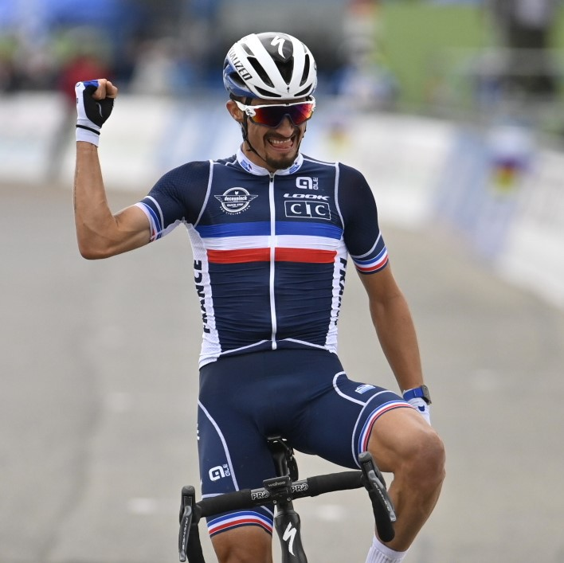
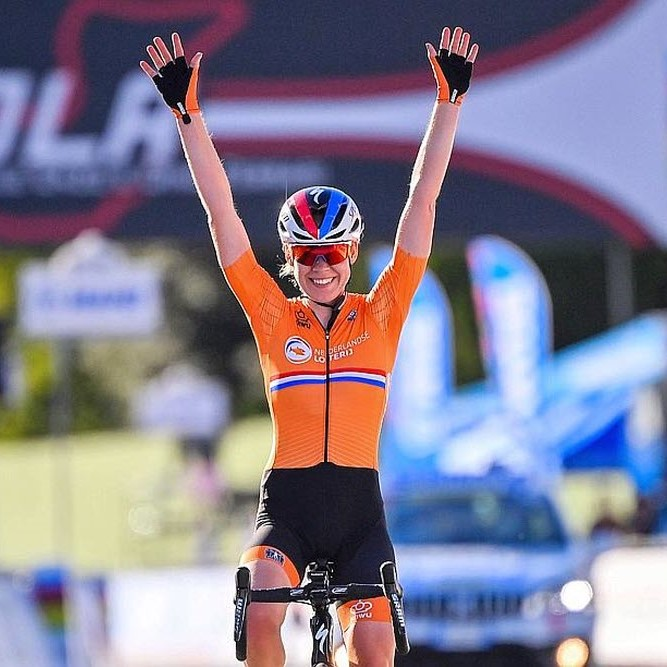
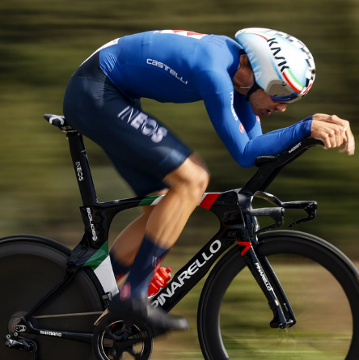
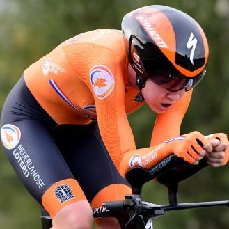

Publié le 28 Septembre 2020
Au terme de 260kms de haute intensité, c'est finalement le Français Julian Alaphilippe qui s'impose dans le final des championnats du Monde 2020 de cyclisme.
Il termine avec quelques longueurs d'avance sur le Belge Wout van Aert et le Suisse Mark Hirschi.

Publié le 27 Septembre 2020
Au terme de 120kms autour du circuit d'Imola, c'est Anna van der Breggen qui s'est imposée, réalisant ainsi le doublé contre la montre-course en ligne. Formidable performance pour cette athlète constante au haut niveau et qui voit le fruit de ses efforts récompensés.

Publié le 26 Septembre 2020
Filipo Ganna a été trop rapide et devient le nouveau champion du monde du contre la montre élite Hommes. Il devance Wout van Aert et Stephan Kung au terme des 40kms de contre la montre dont l'arrivée se jugeait dans la ligne droite du circuit d'Imola. Tout un symbole..

Publié le 25 Septembre 2020
Dans une épreuve marquée par la chute de l'Américaine Crompton, c'est Anna van der Breggen pour les Pays-Bas qui s'est imposée au terme de ce contre la montre féminin des championnats du monde de cyclisme.